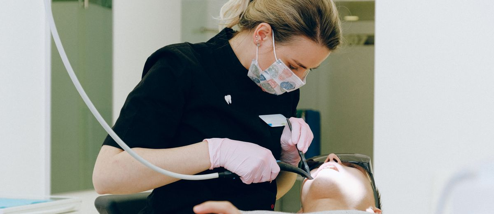

La primera visita no se gana con el diagnóstico

Hay clínicas con equipamiento de primer nivel que pierden la mitad de sus presupuestos en la primera visita. Y clínicas más modestas que los convierten casi todos.
La diferencia no está en el diagnóstico. Ni en la técnica. Ni en el precio.
Está en algo que pasa antes de sacar el papel del presupuesto.
Lo que el paciente evalúa en realidad
El paciente que entra por primera vez da por supuesto que eres buen dentista. Para eso está en tu clínica. Lo que no da por supuesto es si puede fiarse de ti.
Y la confianza no se construye con el diagnóstico. Se construye antes:
- Cómo le miraste cuando entró. Si estabas ocupado con la pantalla o le recibiste de verdad.
- Si le dijiste su nombre. Suena obvio. No lo es.
- Si le explicaste lo que ibas a hacer antes de hacerlo. No después.
- Si le preguntaste qué le daba miedo. Muchos pacientes llegan con una historia, con un mal recuerdo de otra clínica. Si no lo preguntas, no lo sabes. Y si no lo sabes, no puedes manejarlo.
Llevas años estudiando, formándote, invirtiendo en material. Y lo que decide si el paciente acepta el tratamiento es si alguien le trató bien en esos primeros diez minutos.
Por qué se pierde el presupuesto antes de presentarlo
Un presupuesto rechazado rara vez se pierde por precio. Se pierde porque el paciente no llegó al momento del presupuesto con la disposición correcta.
Hay dos tipos de paciente que salen de la primera visita:
- El que cree que vas a resolverle algo. Ese acepta el tratamiento. Puede pedir aplazamiento, puede preguntar por alternativas. Pero quiere seguir adelante.
- El que vino a ver qué le cobran. Ese busca segunda opinión. No porque seas caro: porque no se fue convencido.
La primera visita es el momento en que se decide a cuál de los dos pertenece el paciente que tienes delante. Y esa decisión ocurre en los diez primeros minutos, no en los últimos.
La primera visita no es una visita. Es una decisión. Y casi ninguna facultad lo enseña así.
El protocolo que cambia la conversión
No hace falta reinventar nada. Hace falta sistematizarlo. Las clínicas que convierten bien no tienen dentistas más simpáticos: tienen un protocolo claro para la primera cita.
- Recepción activa. El paciente no debería sentarse en la sala de espera sin que alguien le haya dicho su nombre y le haya explicado cómo va a ser la visita.
- Exploración con narración. Mientras exploras, cuentas lo que ves. En voz alta. Sin tecnicismos. El paciente que entiende lo que ocurre en su boca ya está parcialmente comprometido con el tratamiento.
- Pregunta antes del diagnóstico. "¿Qué es lo que más le preocupa de su boca ahora mismo?" Esa respuesta vale más que cualquier radiografía para entender desde dónde está el paciente.
- El presupuesto, al final y con contexto. No como un papel que se entrega. Como una conversación sobre lo que hay que hacer, en qué orden y por qué.
Lo que muestran las clínicas con mejor tasa de conversión
En las clínicas con un sistema de gestión estructurado, la tasa de aceptación de presupuestos en la primera visita no depende del precio medio del tratamiento. Depende de si hay protocolo de primera visita o no.
Clínicas sin protocolo convierten alrededor del 40–50% de los presupuestos que presentan. Clínicas con protocolo definido y equipo entrenado llegan al 70–80%.
La diferencia en ingresos, con la misma captación, puede superar los 50.000€ anuales en una clínica mediana.
No es magia. Es gestión.
En Método EBA trabajamos este protocolo con clínicas dentales que quieren mejorar su conversión sin bajar precios ni aumentar presupuesto de marketing. El problema casi nunca está en la captación. Está en lo que pasa después de que el paciente entra por la puerta.